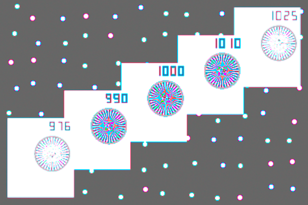

Layered chart scenes
A layered chart scene (#652, 2.27.0) puts several flat, opaque, fronto-parallel cards at different distances in one frame, in front of an optional back plane with point lights, so that focus, background blur and the shape of out-of-focus highlights can be seen side by side. Each site’s defocus comes from the depth of the surface it sees, integrated per site on every render path, with occlusion handled in both directions: a blurred front card spreads over the card behind it, and a blurred background is cut off at a sharp front edge.
Using it
import { prepareLayeredChartScenes, resolveLayeredChartPreset, simulateCapture } from "@photivra/engine";
await prepareLayeredChartScenes(); // once per realm: loads the layered-scene code (a lazy chunk)
const scene = resolveLayeredChartPreset({ scale: "tabletop", focusDistanceM: 1, lens: { focalLengthMm: 50 } });
const result = await simulateCapture({ scene, subjectDistanceM: 1, lens: { focalLengthMm: 50, fNumber: 4, focusDistanceM: 1 },
exposure: { mode: "manual", shutterSeconds: 1 / 125, iso: 100 }, output: { width: 600, height: 400 } });
result.scene.layers; // per card and the back plane: distance, blur diameter, within the depth of field
output.format: "png": 600 × 400, 8-bit sRGB, lossless, 267 kB. The picture is not resized or re-encoded. Open the PNG.
| Surface | Distance (m) | Blur diameter (sites) | Within depth of field |
|---|---|---|---|
| Card 0 | 0.976 | 2.67 | No |
| Card 1 | 0.990 | 1.09 | No |
| Card 2 | 1.000 | 0.00 | Yes |
| Card 3 | 1.010 | 1.09 | No |
| Card 4 | 1.025 | 2.67 | No |
| Back plane | 1.081 | 8.24 | No |
result.scene.layers of the same run. The capture recorded 34 assumptions.
simulateCapture,simulateIdealReference,simulateDisplayViewandprepareDisplayViewtakescene.kind: "layered-chart"onceprepareLayeredChartScenes()has run in the realm; before it a layered request fails with a message saying so.- A layered scene implies
lens.defocus: { model: "geometric-disc" }(recorded as alens.defocusdefault).
The scene
Figure cut here. The page continues with the rest of the guide.